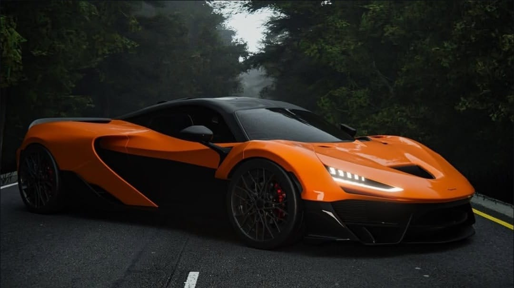
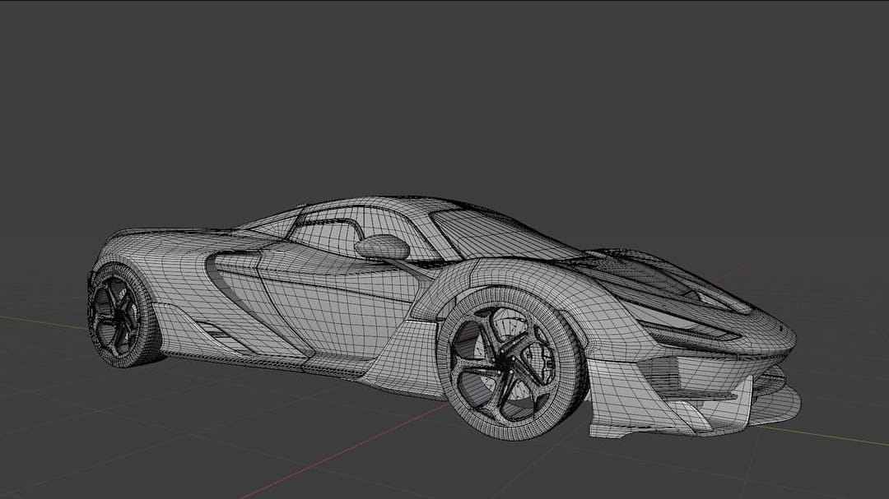
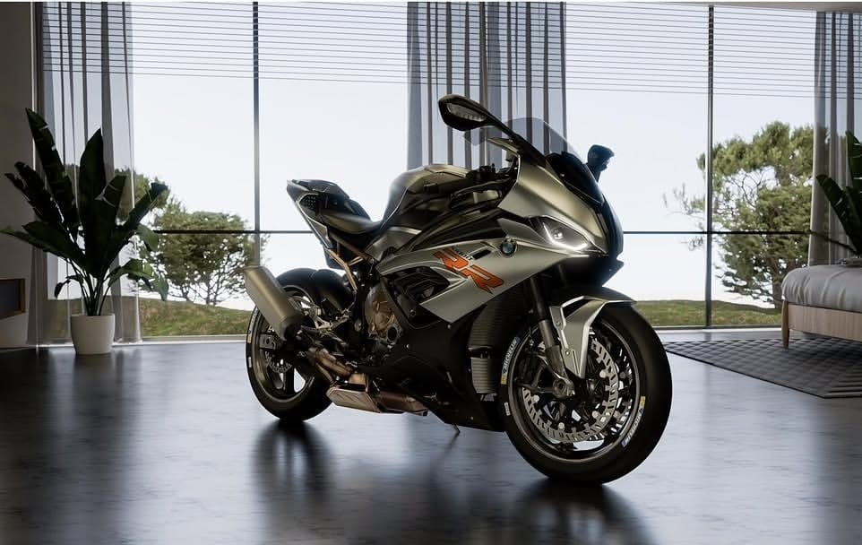
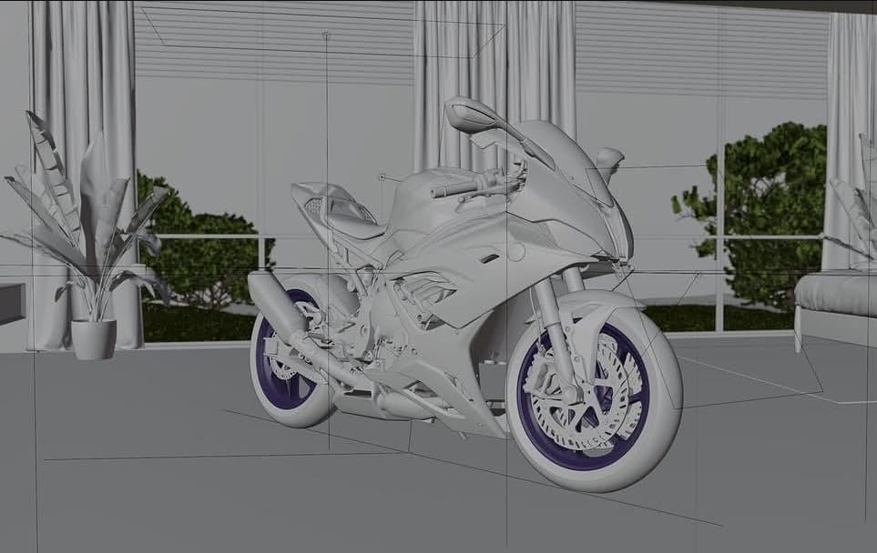

JASA DESAIN 3D
& RENDERING
Ubah Ide Anda Menjadi Realitas Digital! Visualisasi 3D presisi tinggi dengan topologi mesh rapi dan pencahayaan realistis untuk kebutuhan otomotif, produk komersial, arsitektur, hingga aset game.
100%
Topologi Mesh Rapi
4K
High-Quality Render
Gratis
Konsultasi Konsep
Solusi Visualisasi 3D Lengkap
Dikerjakan dengan ketelitian tinggi mulai dari tahap pemodelan struktur hingga *final rendering* siap presentasi maupun produksi.
3D Modeling & Drafting
Pembuatan model 3D presisi dari sketsa, *blueprint*, maupun konsep mentah dengan topologi *mesh* yang rapi dan optimal.
Desain Produk & Otomotif
Visualisasi 3D *Car/Vehicle*, modifikasi *bodykit*, velg, dan produk komersial dengan detail material serta pantulan realistis.
Rendering Arsitektur & Interior
Visualisasi eksterior bangunan dan tata ruang interior dengan pengaturan pencahayaan alami maupun sinematik yang memukau.
Animasi & Visualisasi 3D
Pembuatan aset *game* 3D, animasi *turntable* produk, serta simulasi visual dinamis untuk kebutuhan promosi digital Anda.
Sebelum & Sesudah Rendering
Geser pembanding interaktif di bawah ini untuk melihat transformasi karya 3D dari tahap 3D Wireframe / Clay Viewport menjadi Final Realistic Render.
Supercar 3D Wireframe to Realistic Render

Final Realistic Render
3D Wireframe / MeshTahap pemodelan poligon presisi tinggi (quad-based topology) hingga proses material shading dan environment lighting jalan pegunungan untuk tampilan supercar realistis.
BMW S1000RR Clay Viewport to Final Render

Final Realistic Render
3D Clay ViewportDetail komponen mekanis mesin, cakram rem, hingga fairing aerodinamis dari tahap clay viewport menuju photorealistic studio render dengan refleksi lantai alami.
Ika Fajar Nurlela
Akrab disapa Karela atau Lela
3D Designer & Full-Stack Web Developer Enthusiast
Mahasiswa berusia 20 tahun di Politeknik Negeri Madiun yang memiliki ketertarikan kuat pada visualisasi dan modeling 3D, pengembangan web *full-stack*, desain *dashboard* interaktif, serta keamanan siber. Terbiasa mengubah konsep mentah menjadi karya digital yang presisi, rapi, dan komunikatif.
Pendidikan
Politeknik Negeri Madiun
Program Studi D3 Teknologi Informasi — Fokus pada rekayasa perangkat lunak, desain antarmuka, dan komputer grafis.
Pengalaman Industri
PT INKA Multi Solusi
Divisi IT — Mengembangkan sistem aplikasi web *full-stack* dan perancangan *Executive Dashboard* interaktif perusahaan.
Keahlian Teknis
Hobi & Minat
Traveling, Jajan & Nonton Film
Mencari inspirasi visual sinematik dari film dan eksplorasi tempat baru untuk diterapkan dalam komposisi warna serta pencahayaan karya 3D.
Rekam Jejak Proyek Digital & IT
Executive Dashboard
Laravel + React · Visualisasi data analitik real-time
Website Stok & Penjualan
Perancangan UI/UX & manajemen inventaris modern
Praktikum Kriptografi
Implementasi enkripsi data berbasis standar AES-GCM
KONSULTASI GRATIS SEKARANG!
Punya konsep desain atau butuh estimasi pengerjaan proyek 3D? Diskusikan langsung kebutuhan Anda bersama Lela tanpa biaya konsultasi.
Form Konsultasi Cepat
Isi detail singkat di bawah ini untuk langsung terhubung ke WhatsApp kami.